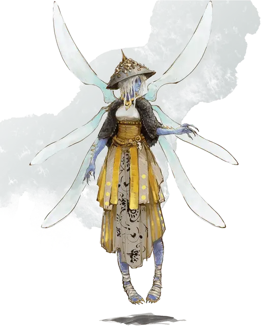

Арктурия
Arcturia
Средняя Нежить, любое злое мировоззрение, именной НИП

Класс Доспеха 17 (природный доспех)
Хиты 135 (18к8 + 54)
Скорость 30 футов, летая 60 футов (парит)
| мод | спас | ||
|---|---|---|---|
| СИЛ | 11 | +0 | +0 |
| ЛОВ | 16 | +3 | +3 |
| ТЕЛ | 16 | +3 | +10 |
| мод | спас | ||
|---|---|---|---|
| ИНТ | 20 | +5 | +12 |
| МДР | 14 | +2 | +9 |
| ХАР | 16 | +3 | +3 |
Навыки Восприятие +9, История +12, Магия +19, Проницательность +9
Сопротивление урону некротическая энергия, холод, электричество
Иммунитет к урону яд; дробящий, колющий, рубящий от немагических атак
Иммунитет к состояниям паралич, очарование, отравление, истощение, испуг
Чувства истинное зрение 120 футов, пассивное Восприятие 19
Языки Общий плюс до пяти других языков
Опасность 21 (33000 опыта)
Бонус мастерства +7
Особенности
Легендарное сопротивление (3/день). Если Арктурия проваливает спасбросок, она может вместо этого сделать спасбросок успешным.
Восстановление. Если у Арктурии есть филактерий, она через 1к10 дней после уничтожения получает новое тело, восстанавливает все хиты и становится живой. Новое тело появляется в пределах 5 футов от филактерия.
Использование заклинаний. Арктурия является заклинателем 18-го уровня. Её базовой характеристикой является Интеллект (Сл спасброска от заклинания 20, +12 к попаданию атаками заклинаниями). Арктурия может неограниченно накладывать заклинание смена обличья [alter self] и у ней подготовлены следующие заклинания волшебника:
• Заговоры (неограниченно): волшебная рука [mage hand], луч холода [ray of frost], фокусы [prestidigitation];
• 1 уровень (4 ячейки): волна грома [thunderwave], волшебная стрела [magic missile], обнаружение магии [detect magic], щит [shield];
• 2 уровень (3 ячейки): Мельфова кислотная стрела [Melf’s acid arrow], увеличение/уменьшение [enlarge/reduce], обнаружение мыслей [detect thoughts], отражения [mirror image];
• 3 уровень (3 ячейки): замедление [slow], контрзаклинание [counterspell], огненный шар [fireball], рассеивание магии [dispel magic];
• 4 уровень (3 ячейки): превращение [polymorph], усыхание [blight];
• 5 уровень (3 ячейки): оживление вещей [animate objects], телекинез [telekinesis];
• 6 уровень (1 ячейка): распад [disintegrate], окаменение [flesh to stone];
• 7 уровень (1 ячейка): изменение тяготения [reverse gravity], телепортация [teleport];
• 8 уровень (1 ячейка): слабоумие [feeblemind], лабиринт [maze];
• 9 уровень (1 ячейка): истинное превращение [true polymorph].
Сопротивление изгнанию. Арктурия совершает с преимуществом спасброски от всех эффектов, изгоняющих нежить.
Природа нежити. Арктурии не нужен воздух, еда, питье и сон.
Действия
Парализующее касание. Рукопашная атака заклинанием: +12 к попаданию, досягаемость 5 футов, одно существо. Попадание: Урон холодом 10 (3к6). Цель должна преуспеть в спасброске Телосложения Сл 18, иначе станут парализованной на 1 минуту. Цель может повторять этот спасбросок в конце каждого своего хода, оканчивая эффект на себе при успехе.
Легендарные действия
Арктурия может совершить 3 легендарных действия, выбирая из представленных ниже вариантов. За один раз можно использовать только одно легендарное действие, и только в конце хода другого существа. Арктурия восстанавливает использованные легендарные действия в начале своего хода.
Заговор. Арктурия накладывает заговор.
Парализующее касание (стоит 2 действия). Арктурия использует Парализующее касание.
Пугающий взгляд (стоит 2 действия). Арктурия фиксирует взгляд на одном существе, видимом в пределах 10 футов. Цель должна преуспеть в спасброске Мудрости Сл 18 от этой магии, иначе станет испуганной на 1 минуту. Испуганная цель может повторять этот спасбросок в конце каждого своего хода, оканчивая эффект на себе при успехе. Если цель успешно совершила спасбросок или действие эффекта закончилось, она получает иммунитет к взгляду Арктурии на следующие 24 часа.
Разрушение жизни (стоит 3 действия). Все существа, не являющиеся нежитью, в пределах 20 футов от Арктурии должны совершить спасбросок Телосложения Сл 18 от этой магии, получая урон некротической энергией 21 (6к6) при провале, или половину этого урона при успехе.
Логово
Лич большую часть времени находится в том месте, в котором он был при жизни. Это может быть дом с привидениями, руины башни или даже школа темной магии. Но некоторые личи могут построить себе собственное, секретное подземелье, о котором никто кроме них не будет знать. Эти подземелья, как правило, хорошо охраняются ловушками или стражами (големы, скелеты и другие чудовища).
Логово лича отражает его высокий интеллект и ужасную хитрость, включая магические и обычные ловушки, которые обеспечивают его безопасность. Нежить, подвижные механизмы и демоны станут препятствием для тех, кто захочет нарушить покой лича.
У лича, встреченного в логове, показатель опасности 22 (41000 опыта).
Действия логова
При значении инициативы «20» (в случае ничьей проигрывает всем конкурентам) лич может совершить действие логова, чтобы вызвать один из следующих эффектов (лич не может использовать один эффект два раунда подряд):
• Лич бросает к8 и восстанавливает одну ячейку заклинаний с уровнем не больше выпавшего результата. Если все такие ячейки доступны, то ничего не происходит.
• Лич выбирает целью одно существо, которое видит в пределах 30 футов. Потрескивающая нить негативной энергии связывает лича и цель. После этого, когда лич получает урон, цель должна будет совершать спасбросок Телосложения Сл 18. При провале лич получает лишь половину урона (округляя в меньшую сторону), а остальной урон получает цель. Эта связь держится до наступления инициативы «20» в следующем раунде, или пока лич или его цель не окажутся вне логова лича.
• Лич вызывает духов существ, которые умерли в его логове. Эти духи материализуются и начинают атаковать одно существо, которые лич видит в пределах 60 футов. Цель должна совершить спасбросок Телосложения Сл 18, иначе получит урон некротической энергией 52 (15к6) при провале, или половину этого урона при успехе. После этого духи исчезают.
Описание
Неспособная придерживаться последовательности существования, Арктурия сосредоточена на преобразовании самой себя, своего окружения и других существ. Ее настроение также подвержено постоянным переменам.